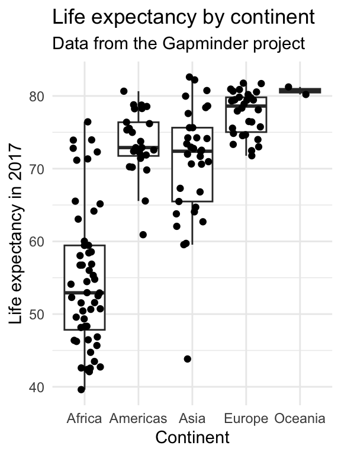

| Date | Module | Topic |
|---|---|---|
| 2025-08-26 | 1: Principles | Principles of data visualization |
| 2025-09-02 | 1: Principles | Good and bad visualizations |
1 - Principles of Data Visualization
Week 1
8/26/2025
üíª üß∞ üìä ü•≥
Jessica Cooperstone, Ph.D.
Introductions üëã
- Name
- Program
- Why you decided to take this class
- One thing you hope to learn
Course logistics üó∫Ô∏è
Teaching Team
Instructor: Jessica Cooperstone
✉️ cooperstone.1@osu.edu
TA: Daniel Quiroz Moreno
✉️ quirozmoreno.1@osu.edu
Office hours: go.osu.edu/dataviz-times
Website
If you have found these slides, you’ve made it to the website! (Good job.)
All course materials will be posted to, or linked to from www.rdataviz.com
Syllabus
A full version of the syllabus can be found on Carmen
A trimmed version of the syllabus can be found on our course site
Attendance
Class will taught in a hybrid, synchronous manner, meaning I expect you to attend class during class time. This attendance can happen in person, or virtually via Zoom I have found that students who attend in person are more engaged, and tend to master material more quickly. But, it is up to you how you want to attend.
- I will record class time for those who want to 1) revisit material or 2) can’t attend (this should be uncommon). These recordings are not to replace coming to class.
How class will be?
A combination of lecture, code run-throughs, live coding, and hands-on exercises.
Bring a laptop (not tablet) to class with R and RStudio downloaded (instructions)
Come with your questions!
Engage as much as you can!
How can you get help?
We are here to help you and will match the enthusiasm that you put into this course. We expect that you will run into issues for which you would like help. You can ask questions:
- During class time (both lecture and recitation)
- During office hours
- Before or after class
- By email (least preferred) - be sure to provide relevant information so we can help you!
Previous programming experience
You do not need to be an R expert for this class, but I will assume working-level knowledge of R programming. If you have no experience with R, but would still like to take this class, you can. I ask then you get yourself up to speed by taking this free online class https://www.edx.org/course/data-science-r-basics (audit only) before the start of the 3rd week of class.
Assigments
Module assignments: After each module, there will be an assignment to provide practice for the techniques learned in class.
Class reflections: After 10 of the 15 weeks, you will write a 1 paragraph reflection on the material that was presented in class. This can include your thoughts on how you will use these lessons in your own research and data visualizations, ways in which you have investigated this topic (or expect to) on your own, or what else you’d like to learn in this area. The purpose of this assignment is not to be burdensome, but to keep you engaged in the course material, and providing feedback to me on what parts you’ve found useful, what you’ve struggled with, and what you’d like to see more of in the future.
Recitation submissions: I ask you submit 8 of 11 recitations to Carmen to show you have made a good faith effort to engage with the course material. I will mark these at 0 or 1 points, with 1 point given for completion of at least 70% of the assignment.
Capstone assignment: At the end of the semester, you will complete a capstone assignment where you create a series of visualizations based on your research data, data coming from your lab, or other data that is publicly available. I expect this assignment to be completed in R Markdown, annotated, and knitted into an easy-to-read .html file. I also expect your code to be fully commented such that I can understand what you are doing with each step, and why.
Late assignments
- I expect you will turn assignments in on time. Late assignments are not accepted. If there are extenuating circumstances that prevent you from turning in an assignment on time, please connect with me as soon as possible after such a situation arises for discussion about a possible deadline extension.
Academic integrity üè´
It is fine for you to work with your classmates/labmates/whoever, but I expect you to turn in your own independent assignments representing your work
All assignments are open book, googling/investigating is required!
The use of generative AI (e.g., ChatGPT, Co-Pilot) on your assignments is not allowed.
üóì Schedule
This is our tentative class schedule - but subject to change depending on our pacing, and your interests!
üóìÔ∏è Schedule (part 1)
üóìÔ∏è Schedule (part 2)
| Date | Module | Topic |
|---|---|---|
| 2025-09-09 | 2: Coding fundamentals | R Markdown for reproducible research |
| 2025-09-16 | 2: Coding fundamentals | Wrangling, the basics |
| 2025-09-23 | 2: Coding fundamentals | ggplot 101 |
| 2025-09-30 | 2: Coding fundamentals | Themes, labels, facets (ggplot 102) |
üóìÔ∏è Schedule (part 3)
| Date | Module | Topic |
|---|---|---|
| 2025-10-07 | 3: Data exploration | Data distributions |
| 2025-10-14 | 3: Data exploration | Correlations |
| 2025-10-28 | 3: Data exploration | Annotating statistics |
üóìÔ∏è Schedule (part 4)
November 11 is Veterans Day (no class)
November 25 will be asynchronous
| Date | Module | Topic |
|---|---|---|
| 2025-11-04 | 4: Putting it together | Principal components analysis |
| 2025-11-18 | 4: Putting it together | Interactive plots |
| 2025-11-25 | 4: Putting it together | Manhattan plots and making lots of plots at once (asynchronous) |
| 2025-12-02 | 4: Putting it together | ggplot extension packages |
üóìÔ∏è Capstone prep
| Date | Module | Topic |
|---|---|---|
| 2025-10-21 | Capstone prep | Capstone plan prep, open session |
| 2025-12-09 | Capstone prep | Capstone assignment, open session |
Why do we visualize our data? üó£Ô∏è
There may be a data dinosaur ü¶ñ

Figure by Alberto Cairo
To understand distribution
Anscombe‚Äôs quartet üéª


To discover data secrets

Figures from Justin Matejka and George Fitzmaurice
To convey our message
Bilbrey et al., New Phytologist, 2021
The data visualization process

Figure adapted from one by Rick Scavetta
Small changes can make a big difference (and some examples)
Simple changes improve interpretability

Simple changes improve interpretability
Encoding data with easy-to-process visual clues
Length is easier to see than angles or areas.

Encoding data with easy-to-process visual clues
Length is easier to see than angles or areas.


Color scales should be intuitive and accessible
These are not.
Show your data if you can
#barbarplots

Show your data if you can
#barbarplots
Show your data if you can
#barbarplots

Cut your axes with care

Cut your axes with care

Cut your axes with care

Avoid figure spaghetti üçù

Avoid figure spaghetti üçù
Be consistent among figures
Use the same color schemes/shapes across figures
If you’re ordering/grouping, do so in the same manner
Make sure your plot has a clear message üçï

Marie Kondo your plots
Declutter, and keep only parts that are informative (and spark joy) üòª

From https://socviz.co/lookatdata.html
Oral presentation and publication figures might not be the same
Some take home messages
What should you think about when making visualizations?
Who are you talking to? üì¢
What are you trying to convey? üìù
How can you fairly represent your data? üöØ
Next class
Submit (through Carmen) by Monday 9/1/2025 at 11:59pm:
- 1 good visualization (and a paragraph on why its good)
- 1 bad visualization (and a paragraph on why its bad)
We will go through these next week. Daniel will pick the best good and the best bad visualizations and there will be prizes! üéâ
01 Principles, © Jessica Cooperstone, 2025